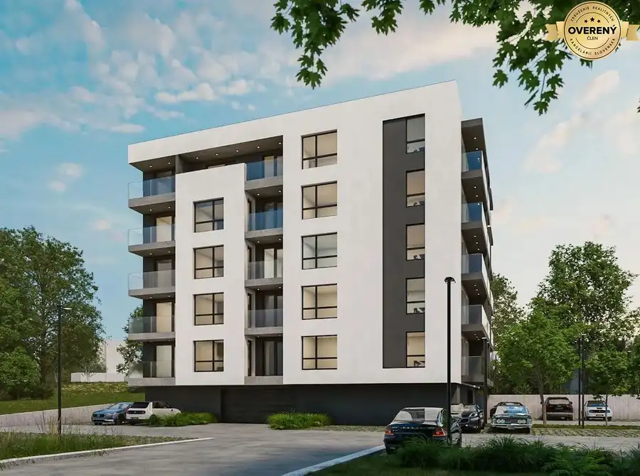
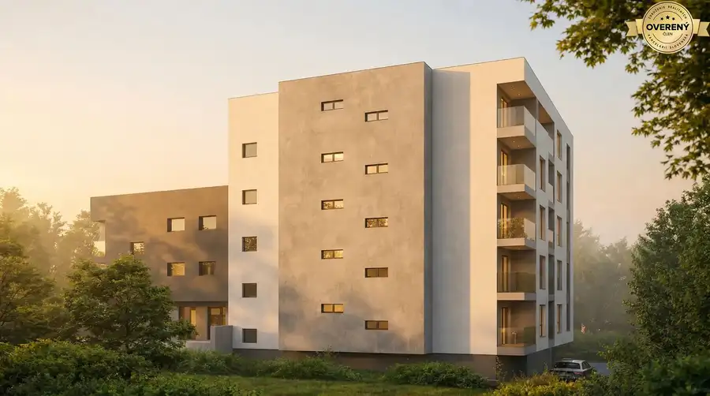
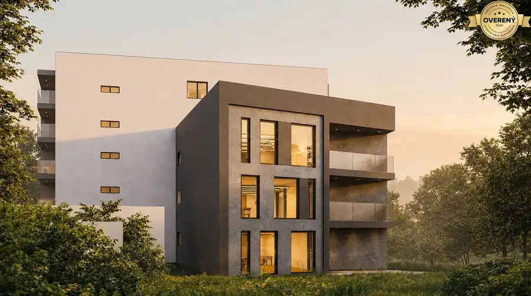
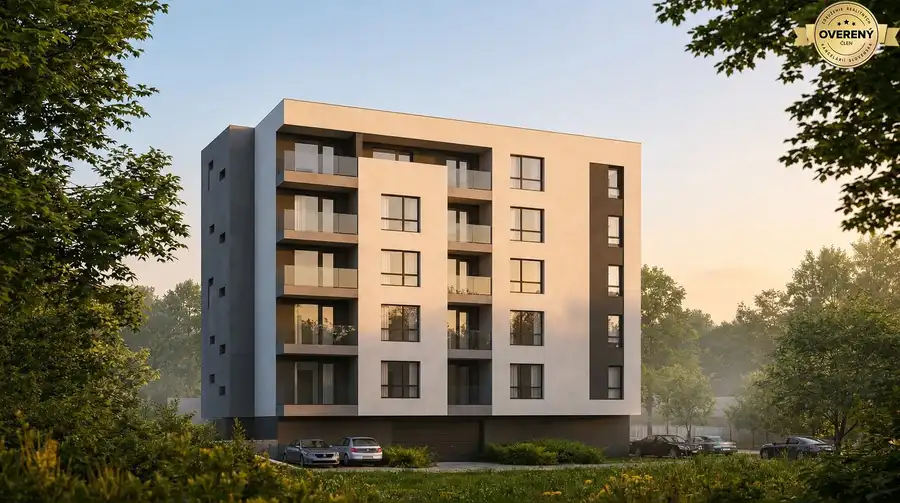
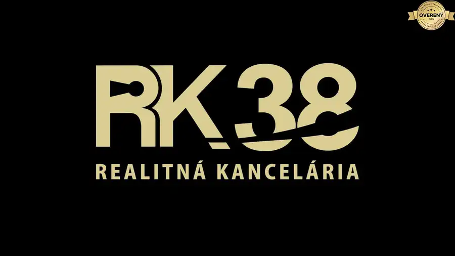

Predaj rezidenčného developerského projektu s právoplatným ÚR | BA
Karlova Ves, Bratislava





- Plocha1988 m²
O nehnuteľnosti
POPIS PROJEKTU A LOKALITY:
Predstavujeme Vám prémiový rezidenčno-polyfunkčný developerský projekt situovaný vo vyhľadávanej a etablovanej lokalite
Bratislavy – Karlova Ves
, v tesnej blízkosti Karloveského ramena a Botanickej ulice. Poloha spája výbornú dopravnú dostupnosť do centra mesta s bezprostredným dotykom prírodno-rekreačnej zóny Dunaja, čo garatuje vysokú likviditu pri následnom predaji koncovým klientom.
ZÁKLADNÉ INVESTIČNÉ METRIKY:
-
Lokalita:
Bratislava IV – Karlova Ves (Karloveské rameno / Botanická)
-
Status povolenia:
Právoplatné Územné rozhodnutie (ÚR) zo dňa
-
Funkcia:
70 % Bývanie (Bytový dom) / 30 % Občianska vybavenosť a administratíva
-
Celková výmera pozemkov:
1 988 m²
-
Čistá predajná plocha bytov (NSA):
1 406,6 m² (25 bytových jednotiek)
-
Užitočná plocha vybavenosti (NLA):
372,3 m² (obchod + kancelárie)
-
Celková predajná/prenajímateľná plocha (NSA + NLA):
1 778,9 m²
-
Parkovacie kapacity: 41 PM
(36 v podzemnej garáži De-Park + 5 na teréne)
DISPOZIČNÉ A ARCHITEKTONICKÉ RIEŠENIE:
Projekt je navrhnutý ako samostatný polyfunkčný objekt rozdelený na 4- a 6-podlažnú sekciu:
-
Skladba bytov (25 BYTOV):
Efektívny a trhovo najžiadanejší mix 2-izbových a 3-izbových bytov s výmerami od 50,4 m² do 83,6 m². Každý byt disponuje vlastným balkónom alebo terasou.
-
Občianska vybavenosť (372,3 m²)
: Obchodný priestor/parter na 1. NP (106,1 m²) a administratívne/ordinačné priestory na 2. a 3. NP (266,2 m²).
-
Statická doprava:
Spolu 41 parkovacích miest (36 stojísk v podzemnej garáži riešených poloautomatickým zakladacím systémom De-Park + 5 exteriérových stojísk).
PLOCHY A BILANCIE:
-
Výmera pozemku:
1 988 m²
- Podlažná plocha nadzemných podlaží (GFA): 2 555,4 m²
- Celková úžitková plocha objektu: 2 935,2 m²
- Podiel zelene: veľkorysých 1 045 m²
STAV POVOĽOVACIEHO PROCESU A PRIPRAVENOSŤ:
- Projekt disponuje schváleným a právoplatným územným rozhodnutím (ÚR) na stavbu "Bytový dom s občianskou vybavenosťou" (kód 1120).
- Všetky vyjadrenia dotknutých orgánov, Magistrátu hl. mesta SR Bratislavy a správcov inžinierskych sietí (BVS, ZSD, SPP a pod.) sú kladné.
- Majetkoprávne vzťahy k pozemkom a prístupovým komunikáciám sú 100% vyriešené. Projekt je pripravený na okamžité vypracovanie dokumentácie pre stavebné povolenie (DSP) a začatie stavebného konania.
FORMA PREDAJA A TRANSAKCIA:
- Primárna forma: Share Deal (prevod 100 % obchodného podielu v účelovej SPV s.r.o.).
- Alternatívna forma: Asset Deal (prevod pozemkov a práv z ÚR) – po dohode strán.
Cena: Na vyžiadanie / Dohodou
(po prvej kvalifikácii investora).
DATA ROOM A PODKLADY:
Kompletná dokumentácia (DÚR, právoplatné ÚR, architektonická štúdia, vyjadrenia dotknutých orgánov a podklady pre Feasibility Study) je k dispozícii pre overených záujemcov po podpísaní Dohody o mlčanlivosti (NDA).
V prípade záujmu o sprístupnenie podkladov alebo dohodnutie osobnej prezentácie projektu nás neváhajte kontaktovať.
Parametre
- Rozloha pozemku
- 1988 m²
- Poschodie
- neuvedené
- Status
- aktívne
- Voda
- verejný vodovod
- El. napätie
- 230V
- Plyn
- áno
- Kanalizácia
- áno
- Kúpeľňa
- nie
- Vykurovanie
- áno
- Balkón
- nie
- Lódžia
- nie
- Terasa
- nie
- Garáž
- nie
- Predzáhradka
- nie
- Terén
- rovina
- Pripravené na výstavbu
- vydané územné rozhodnutie
- Dátum zverejnenia
- 2026-09-11
Kde to je
Mohlo by Vás zaujímať
 BytNové
999 999 999 €Moderný 2-izbový mestský byt s priestrannou terasou
Staré Mesto, Bratislava
2-izbový60.2 m²1. podlažie
BytNové
999 999 999 €Moderný 2-izbový mestský byt s priestrannou terasou
Staré Mesto, Bratislava
2-izbový60.2 m²1. podlažie
 BytNové
999 999 999 €Vrcholné bývanie v priestrannom 4-izb. mezonete na exluzívnej adrese
Staré Mesto, Bratislava
4-izbový167 m²4. podlažie
BytNové
999 999 999 €Vrcholné bývanie v priestrannom 4-izb. mezonete na exluzívnej adrese
Staré Mesto, Bratislava
4-izbový167 m²4. podlažie
 BytNové
999 999 999 €Rodinná rezidencia s veľkorysou privátnou záhradou
Staré Mesto, Bratislava
4-izbový130.48 m²2. podlažie
BytNové
999 999 999 €Rodinná rezidencia s veľkorysou privátnou záhradou
Staré Mesto, Bratislava
4-izbový130.48 m²2. podlažie